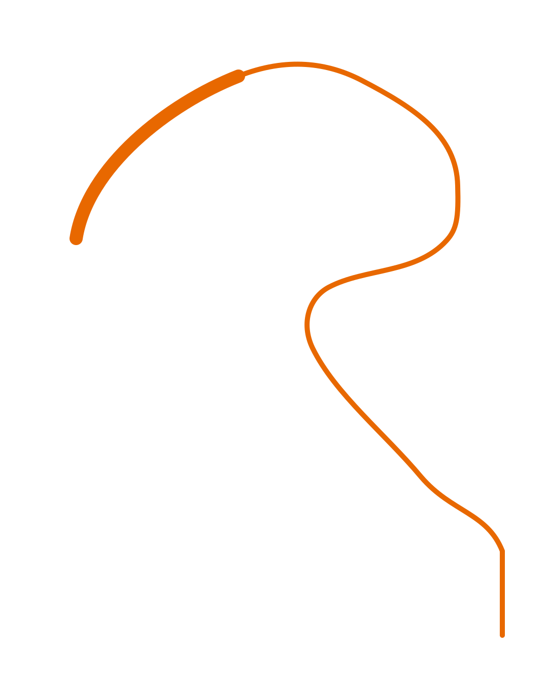
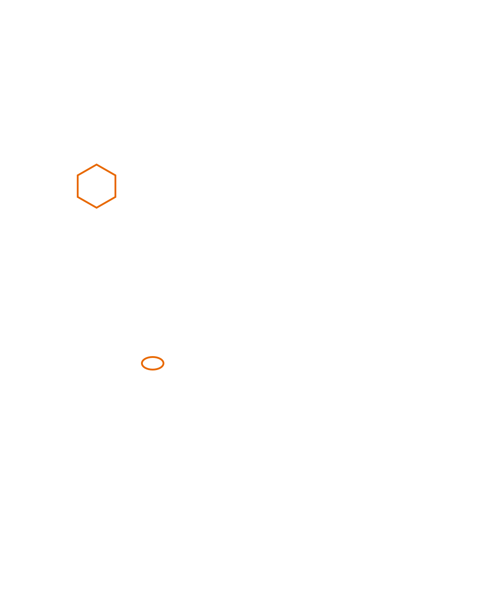

Outbound in 2026
Volume is
dead.
The rules that replaced it.
01
Authenticate
5,000/day to Gmail, Yahoo, or Outlook is bulk. SPF + DKIM + DMARC, or SMTP reject.
Gmail

Microsoft
02
Cap
Practitioners cap ~30/inbox/day. Scale with more inboxes, not more volume.
Gmail
Instantly
Smartlead
03
Invite
~100 connects/week (working ceiling). Sales Nav is 50 InMail/mo. You cannot buy more invites.
Sales Nav
04
Waterfall then keep
Enrich the shortlist. Stop on the first valid email. Then outbound people who already bought.
Clay
HubSpot
Findymail